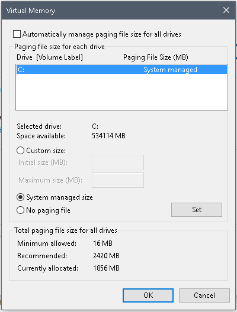

Symptoms
# # # # # # # # # # # # # # # # # # # # # # # # # # # # # # # # #
# Example Message #
# # # # # # # # # # # # # # # # # # # # # # # # # # # # # # # # #
2017-10-27T10:23:48.348-0400 F - [conn3080] out of memory.
Cause
This means that your MongoDB service has crashed because the system ran out of Physical and
Virtual Memory. Typically, this is due to misconfigured Page File Settings.
Resolution
If you are receiving this error, the Netwrix Change Tracker Database and Hub Server are NOT
functioning. This is a critical error and for monitoring to continue, it must be resolved.
To resolve this error:
-
Open Run by typing the Windows+R key on your keyboard
- Type in SYSDM.CPL and hit Enter
-
This will open up Advanced System Settings. Click on the
Advanced tab
- Under Performance, click on Settings...
- In the Performance Options Menu, click the Advanced tab
- Under Virtual Memory click on Change
-
Verify that Virtual Memory is System managed

-
If it is not set to System managed, please configure that by selecting
the System managed size radio button
- Click OK
- In some scenarios, it may be best to reboot the server.
NOTE: MongoDB has garbage which clean up physical and virtual memory. MongoDB tries to reserve
as much memory as possible, even though it is not using it. It gladly will give up this
memory to the systems that need it. Any queries run get stored into the page file for easy
access. If this is not system managed, when it reaches the limit, it will crash the mongo
database service. Having the C drive set to system managed is the best way to ensure
excellent performance from both the system, as well as the database itself.
Related articles